Энциклопедия издается по благословению Патриарха Московского и всея Руси Алексия II
и по благословению Патриарха Московского и всея Руси Кирилла
Как приобрести тома "Православной энциклопедии"
ДРЕВО ЖИЗНИ
[евр. 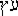 , 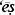  ], одно из деревьев, произраставших, согласно библейскому повествованию, в Эдемском саду, где Господь поместил первых людей - Адама и Еву. Это дерево и древо познания добра и зла были особо выделены в Эдемском саду (Быт 2. 9). Первые люди получили от Бога разрешение вкушать от любого дерева в Эдемском саду, за исключением дерева познания добра и зла (Быт 2. 16-17). Запрет на вкушение не касался Д. ж.; из дальнейшего повествования ясно, что человек вкушал от его плодов и лишился этой возможности только после нарушения запрета Божия относительно дерева познания добра и зла (Быт 3. 22). В кн. Бытие рассказывается, как змей внушает жене Адама мысль, что вкушение от дерева познания добра и зла не приведет к смерти,- наоборот, у Адама и его жены «откроются очи» и они станут «как боги, знающие добро и зло» (Быт 3. 4-5). Бог произносит приговор за ослушание и лишает их возможности далее вкушать от Д. ж. Он изгоняет их из рая, а у входа в Эдемский сад ставит херувима, чтобы не допустить людей обратно (Быт 3. 9-24).
], одно из деревьев, произраставших, согласно библейскому повествованию, в Эдемском саду, где Господь поместил первых людей - Адама и Еву. Это дерево и древо познания добра и зла были особо выделены в Эдемском саду (Быт 2. 9). Первые люди получили от Бога разрешение вкушать от любого дерева в Эдемском саду, за исключением дерева познания добра и зла (Быт 2. 16-17). Запрет на вкушение не касался Д. ж.; из дальнейшего повествования ясно, что человек вкушал от его плодов и лишился этой возможности только после нарушения запрета Божия относительно дерева познания добра и зла (Быт 3. 22). В кн. Бытие рассказывается, как змей внушает жене Адама мысль, что вкушение от дерева познания добра и зла не приведет к смерти,- наоборот, у Адама и его жены «откроются очи» и они станут «как боги, знающие добро и зло» (Быт 3. 4-5). Бог произносит приговор за ослушание и лишает их возможности далее вкушать от Д. ж. Он изгоняет их из рая, а у входа в Эдемский сад ставит херувима, чтобы не допустить людей обратно (Быт 3. 9-24).
{kind=link}
Культовая резная подставка. Кон. Х в. до Р. Х. Палестина (Музей Израиля, Иерусалим)
В более поздней библейской лит-ре образ Д. ж. встречается в описаниях добродетелей мудрого праведника, а также как символ присутствия Божия и помощи Божией. С Д. ж. сравнивается премудрость, к-рая ценнее богатства (Притч 3. 13-18), исполнившееся желание мудрости (Притч 13. 12), немногословие человека (Притч 15. 4), оно - «плод праведника», идущего путем соблюдения заповедей и не надеющегося на мирское богатство (Притч 11. 24-31). Возможно, на Д. ж. указывала форма семисвечника в скинии (Meyers. 1979). Колонны Иахин и Воаз храма Соломона (3 Цар 7. 21), видимо, также символизировали Д. ж. (Wright. 1941). В греч. переводе LXX выражение «древо жизни» (τὸ ξύλον τῆς ζωῆς) встречается в Ис 65. 22 (хотя в МТ употребляется слово «дерево»). Неизвестно, является ли оно поздней вставкой (в пользу этого предположения - чтение в 1QIsa без артикля) или уже было в изначальном тексте (о чем свидетельствует сохранившийся определенный артикль в 1QIsb - ), но вариант LXX вполне соответствует эсхатологическому контексту данного стиха, где Господь говорит, что «дни народа Моего будут, как дни дерева».
Ссылкой на Д. ж. из Быт 2 являются также упоминания (τὸ) ξύλον (τῆς) ζωῆς в Откр 22. 2, 14, 19 при описании буд. города святых и в Откр 2. 7 - при упоминании о рае.
{kind=link}
Отпечаток с цилиндрической печати "Адам и Ева" XXIII в. до Р. Х. Шумер (Британский музей, Лондон)
Ряд археологических артефактов из Палестины с осторожностью можно интерпретировать как отголоски распространенного на древнем Ближ. Востоке повествования о Д. ж., поскольку на них изображены дерево и фигура херувима (иногда и человека), а образ херувима в Палестине кон. II - нач. I тыс. до Р. Х. был связан с представлением о Яхве - Боге народа Израилева (Herr. 1997).
В Тель-Хацоре (см. Асор, в секторе A, в слое, датируемом IX-VIII вв. до Р. Х.) было найдено вырезанное из кости изображение 4-крылого серафима, держащего Д. ж. Там же, в секторе B, в слое того же времени, был найден резной ящик из слоновой кости с изображением крылатого сфинкса и падшей ниц фигуры, молящейся перед Д. ж. (Yadin. 1956).
В большинстве случаев изображение Д. ж. в Палестине также понимается просто как символ присутствия божества, дающего жизнь и плодородие (Leonard. 1989; Meyers. 1979). В период поздней бронзы деревья изображаются обычно с одним центральным стволом и отходящими от него 6 ветвями (Meyers. 1979). Изображения Д. ж. в Палестине нередко были связаны с культом Астарты, примером чему может быть найденная в Таанахе культовая резная подставка кон. X в. до Р. Х. В ее 3-м ярусе изображено дерево, листву к-рого поедают козы, в окружении львов - символов Астарты (Herr. 1997). Похожее изображение (Д. ж., козы и львы под ними) было найдено на фрагменте керамического сосуда VIII в. в Кунтиллет-Аджруд, в текстах на фрагменте также упоминается Астарта (Meshel. 1979; Hestrin. 1991; Taylor. 1994; McCarter. 1997).
Из непалестинских источников известна цилиндрическая печать «Адам и Ева» с изображением дерева в центре, по его сторонам - фигуры женщины, мужчины (который идентифицируется по головному убору с рогами) и змея (Lond. Brit. Mus. Dep. of the Ancient Near East. 89326). В сер. XIX в. ассириолог Дж. Смит соотносил это изображение с библейским повествованием о грехопадении. В наст. время считается, что эта сцена вписывается в общий смысловой контекст изображений на цилиндрических печатях из Месопотамии XXI-XXII вв. до Р. Х.: мужчина сидит напротив жрицы, пальма и змея между ними символизируют плодородие (Mitchell. 1988. P. 24. N 1; Collon. 1982. P. 124. N 302).
Большинство неписьменных древневост. источников, на к-рых исследователи усматривают символику Д. ж., можно разделить на 2 группы (Wallace. 1997). К 1-й относятся изображения дерева с божественной антропоморфной фигурой или с к.-л. мифическими существами, над деревом иногда помещался крылатый диск. В нек-рых случаях эти сцены можно соотнести с определенными эпизодами древних мифов. Ко 2-й группе принадлежат изображения 2 животных (либо мифических, либо домашних, напр. коз) по сторонам от древа, к-рое находится в центре и символизирует божество, хотя во мн. случаях это может быть оспорено (Ibidem).
В письменных ближневост. источниках Д. ж. явно не упоминается, хотя особые растения, пища или вода нередко описываются как дающие дар бессмертия или вечную молодость. Так, герой эпоса о Гильгамеше ищет растение, к-рое дарует вечную молодость. В вавилонском мифе об Адапе бог Ану предлагает герою «пищу жизни» и «воду жизни», но по совету бога Эа он отвергает их, считая скорее пищей смерти и водой смерти (см. ст. Шумеро-аккадская религия). Священные деревья упоминаются в текстах аккад. заклинаний: деревья , растущие в особом месте в Эриду, обладают особой целительной силой (Ibidem).
В межзаветной лит-ре о Д. ж. обычно говорится в связи с учением о наступлении Царства Божия. В 1-й кн. Еноха упоминается благоуханное дерево, от к-рого будут вкушать после Великого суда праведные и смиренные, «от его плода будет дана жизнь избранным» (1 Енох 25), и «дерево мудрости», к-рое отождествляется с библейским деревом познания добра и зла (1 Енох 32). В «Завете Левия» предрекается, что меч, препятствовавший Адаму войти в рай, будет удален и святые вкусят от Д. ж. (Test. XII Patr. III 10-11). В 3-й кн. Ездры есть замечания об особых свойствах деревьев рая после того, как последний будет явлен (3 Езд. 7. 123-124; 8. 52).
Толкование образа «Древо жизни» в святоотеческий период.
Вкушение от Д. ж. первых людей рассматривалось церковными авторами как символ бессмертия, от к-рого люди отказались, нарушив Божественную заповедь. Согласно прп. Иоанну Дамаскину, Д. ж. «было древом, имевшим силу, подававшую жизнь, или годным для еды только тем, которые были достойны жизни и не подлежали смерти» (Ioan. Damasc. De fide orth. II 11). Человек вкушал от Д. ж., душа же его наслаждалась созерцанием Божества, а «сладость божественного общения сообщает удостоившимся его жизнь, не прерываемую смертию» (Ibidem).
Вкушение плодов часто понималось как познание духовных сущностей и даже собственно богопознание, т. к. Бог помимо древа познания посадил посреди рая «дерево жизни, указывая на познание, как путь к жизни... Ибо ни жизнь без познания, ни познание без истинной жизни не прочно. Поэтому и то и другое дерево были посажены друг подле друга» (Diogn. 12. 3-4). Прп. Максим Исповедник предлагает анагогическое истолкование смысла слов «насадил Господь Бог рай... на востоке» (Быт 2. 8): «Полагаю, что рай является человеческим сердцем, насажденным на востоке Боговедения. Посередине его посадил Бог дерево жизни и древо познания добра и зла. Дерево жизни понимается как логос умопостигаемых [вещей], а древо познания добра и зла - как логос чувственных [вещей], ибо таковой несет ведение добра и зла» (Maximus Conf. Quaest. et dub. 44).
Говоря о «невыразимом различии» древа познания добра и зла и Д. ж., прп. Максим Исповедник называет Д. ж. «умом души, в котором и находится мудрость», а древо познания добра и зла - «чувством тела, в котором... происходит движение неразумия». «Если бытие человека определяется одним только чувственным и телесным различением наслаждения и муки, то он, преступая божественную заповедь, вкушает от древа познания добра и зла, то есть вкушает неразумие по чувству... А если бытие его полностью определяется духовным различением, отделяющим преходящее от вечного, то он, соблюдая божественную заповедь, вкушает от древа жизни» (Maximus Conf. Quaest. ad Thalas. 43).
В богомыслии отцов Церкви спасение человека часто описывалось как возвращение в рай и вкушение от Д. ж. Уже сщмч. Ириней Лионский говорил о Д. ж. как о типологическом прообразе древа спасения: «Крепкое слово Божие, которое по небрежению мы потеряли чрез древо... опять получили через домостроительство древа» (Iren. Adv. haer. V 17. 4; ср.: Maximus. Conf. Quaest. et dub. 55). Домостроительство спасения было «для нас,- писал свт. Григорий Богослов,- врачеванием нашей немощи, возвращающим ветхого Адама туда, откуда он ниспал, и приводящим к древу жизни, от которого удалил нас плод древа познания» (Greg. Nazianz. Or. 2).
Истолковывая слова Прославленного Христа к Ангелу Эфесской Церкви (Откр 2. 7: «...побеждающему дам вкушать от древа жизни, которое посреди рая Божия»), св. Андрей Кесарийский говорит: «Под древом жизни иносказательно разумеется вечная жизнь, а она есть Христос, как говорит об этом Соломон и этот же апостол Иоанн Богослов. В другом месте Соломон, рассуждая о Премудрости, говорит, что Она есть «Древо жизни» (Притч 3. 18), и апостол говорит о Христе, что «Сей есть истинный Бог и Жизнь вечная» (1 Ин 5. 20)» (Andr. Caes. Apoc. 1. 3). Достижение же вечной жизни возможно, только «если... исправить жизнь и победить страсти» (Там же).
Не отрицая реального существования Д. ж., отцы Церкви и литургическое предание указывали на его прообразовательное значение. Так же как Иисус Христос - это новый Адам (Рим 5), нередко типологически противопоставляются Д. ж. и Древо крестное: «...К древу жизни, от которого отпали, возведены древом бесчестия» (Greg. Nazianz. Or. 33 // PG. 36. Col. 225). Прп. Иоанн Дамаскин говорит о прямом прообразовании (Ioan. Damasc. De fide orth. 4. 12). Образ Креста как Д. ж. нашел отражение в церковном искусстве и иконописи. Так, известен тип нательного креста «Древо жизни» (см. разд. «Иконография» в ст. Крест).
В литургических текстах сопоставляются утраченный рай и Церковь: 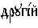 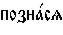 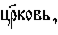 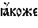 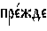 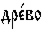 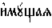 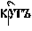 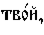 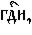 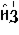 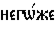 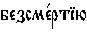 (в неделю 3-ю Великого поста, утренний канон, песнь 5). Д. ж. может называться и Сам Иисус Христос: 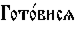  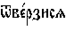 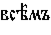 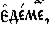 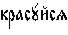 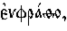 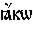 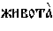 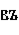 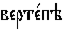 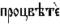 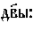 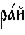 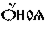 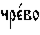 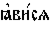 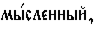 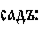 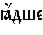 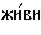 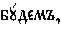 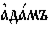 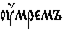 (тропарь предпразднства Рождества Христова, 23 дек.; ср.: Greg. Nazianz. Or. 29).
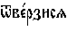 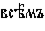 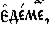 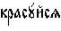 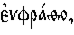 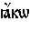 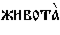 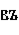 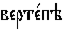 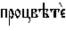 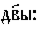 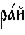 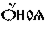 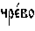 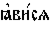 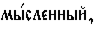 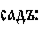 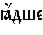 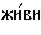 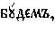 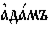 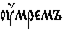 (тропарь предпразднства Рождества Христова, 23 дек.; ср.: Greg. Nazianz. Or. 29).